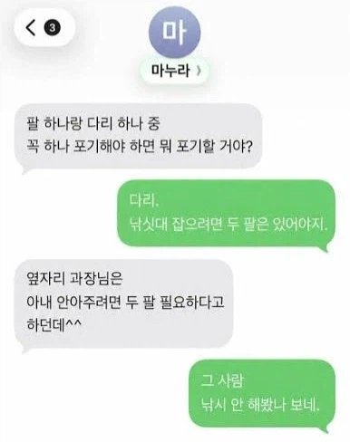

이미 늦었으니 당당하게 나가자

이미 늦었으니 당당하게 나가자
팔은 너무 중요해 .... 손가락도 그렇고
옆자리 과장님하고 뭐 있나보네
팔이야 이거 하나 없어봤자 팔 한짝이 저기 허지마는.
다리는 이거 없으며는 목발을 짚어야 하니께..
손발이 다 저기 허잖유
의족
딸치려면 손이 있어야죠
하나만 자른대잖아 ... 왼쪽 오른쪽 어디 잘릴래?
팔이라도 성히 있어야 컴퓨터라도 하지
이미 늦었는데 할 말이라도 속 시원하게 해야지ㅋㅋㅋㅋ
ㅋㅋㅋㅋㅋㅋㅋㅋ간다면 끝까지 간다
??? : 요 썰고~ 요 짜르고~
그 과장하고 살어
저런 게 행복한 부부다 ㅋㅋ
인싸 : 팔포기
아싸: 다리포기
포기하는 정도가 어느정도냐에 따라 다를거 같은데
팔꿈치 아래나 무릎 아래부터 없는거면(관절 살릴수 있으면) 다리를 포기할 듯
무릎만 살아있으면 의족으로 어느정도는 걸어다닐수 있을거 같은데
다리. 다리도 중요하지만 신경이 끊긴게 아닌 이상 의족으로 어떻게 해결 가능함. 손도 의수가 있긴 한데 섬세하게 무언가를 하려면 손 중요. 물론 다리도 서있는다는 행위를 위해 섬세함이 필요하긴 하지만 말단부를 생각하면 역시 손...
팔이 없으면 지퍼도 못내림
딸딸이도 못침
그쯤되면 걍 열고 다녀라
두두로 사느냐 꼬마돌로 사느냐
아내는 다리로도 안을 수 있어!
포켓캣 만나셨네
어떤 깡패 영화에서 고문 기술자가 사지 중 한쪽만 자를 거면 다리를 추천한다고 나온 거 기억나네.
팔 한쪽 잘라도 다리 움직이는 데엔 지장이 없지만, 다리 한쪽 자르면 목발 신세라 팔의 거동도 세트로 불편해진다고.
그 하루 두탕뛰던 사우나 친구?ㅋㅋ
싸움은 기세다
? 어쩌라고 제육이나 볶아와